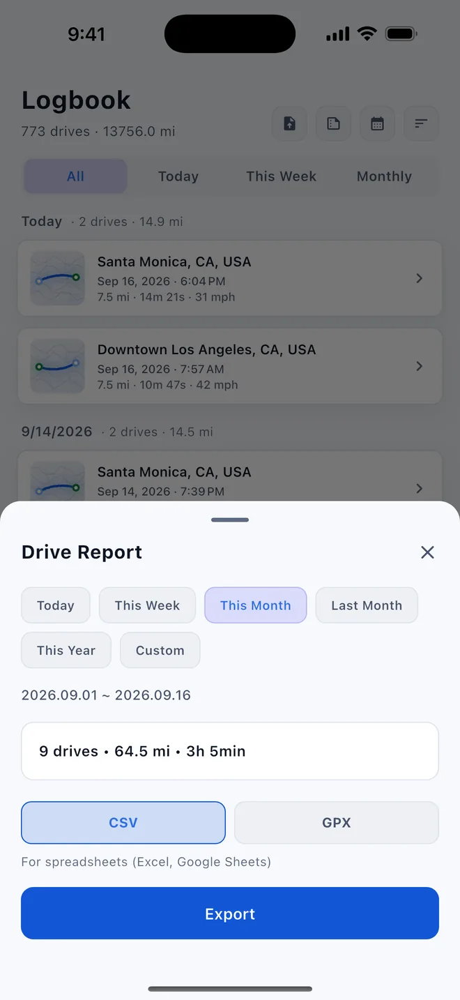

En un coup d’œil
Les quatre points que la plupart des gens veulent connaître en premier. Tous les détails, avec leur source, figurent dans le tableau complet plus bas.
| Application | Sans compte | Trajets gardés sur le téléphone | Enregistre tout seul | Gratuit |
|---|---|---|---|---|
| DashLog | ✓Oui | ✓Oui | ✓Oui | ✓Oui |
| myTracks | ✓Oui | ✓Oui | Un tracé par jour | En partie |
| Driving Tracker | ✓Oui | ✓Oui | Premium | En partie |
| Geo Tracker | –Non précisé | ✓Oui | ✗Non | ✓Oui |
| Google Maps, Vos trajets | ✗Non | Par défaut | ✓Oui | ✓Oui |
| Plans, Lieux visités | –Non précisé | Synchro chiffrée | Lieux seulement | ✓Oui |
| Enroad | Facultatif | Avec un réglage | ✓Oui | En partie |
| Wheelz | ✗Non | ✗Non | ✓Oui | En partie |
| MileIQ | ✗Non | ✗Non | ✓Oui | 40 trajets par mois |
| Driversnote | ✗Non | ✗Non | ✓Oui | 15 trajets par mois |
✓ oui · ✗ non · – non précisé par l’éditeur
Le tableau complet
Les mêmes dix solutions, avec le détail derrière chaque réponse. Les prix sont ceux de l’App Store, de Google Play ou des éditeurs aux États-Unis, en dollars US, et quand un éditeur ne précise pas un point, la cellule indique non précisé.
Faites défiler le tableau horizontalement pour voir toutes les colonnes →
Applications de suivi de trajets telles que décrites par leurs éditeurs, vérifiées le 26 novembre 2026. Les numéros en exposant renvoient aux sources.
| Application | Où sont gardés vos trajets | Compte requis ? | Modèle de prix | Plateformes | Enregistre les trajets tout seul ? | Export | Ce qui est gratuit |
|---|---|---|---|---|---|---|---|
| Trajets gardés sur le téléphone, sans compte | |||||||
| DashLogGrayForge (ce site) | Sur l’appareil. Aucun serveur de DashLog ne reçoit vos itinéraires ; les statistiques d’usage et les rapports de plantage ne les contiennent pas.12 | Non.13 | Gratuit, sans abonnement.1 | iPhone (iOS 16.2+) avec une app Apple Watch ; Android avec Wear OS34 | Oui, quand le téléphone se connecte à CarPlay ou au Bluetooth de la voiture, après une configuration unique. Ou démarrage d’un simple geste.13 | GPX ou CSV, un trajet ou toute une période. Import GPX.13 | Tout : enregistrement automatique, relecture de l’itinéraire, statistiques et export.13 |
| myTracksDirk Stichling | Sur l’appareil, synchronisé via iCloud entre vos appareils Apple. Étiquette de confidentialité : Data Not Collected (aucune donnée collectée).5 | Non.5 | Gratuit avec Premium en option ; prix non affichés sur la fiche.5 | iPhone, iPad, Apple Watch (iOS 18.6+) ; synchronisation iCloud avec le Mac5 | Le mode Journal (Diary Mode) enregistre un tracé par jour en arrière-plan, pas des trajets séparés.5 | GPX, KML, KMZ ou ZIP5 | Les fonctions Premium ne sont pas précisées.5 |
| Driving Tracker: GPS Trip LogRichard Bláha | Sur l’appareil, « no account, no cloud » (ni compte, ni cloud). La section Sécurité des données mentionne des informations financières, l’activité dans l’application et des données de performance.67 | Non.67 | Gratuit ; abonnement Premium mensuel ou annuel avec essai de 7 jours. Prix non affichés.6 | Android67 | Premium uniquement. La version gratuite démarre et s’arrête d’un geste.6 | Premium : GPX ou sauvegarde ZIP6 | Enregistrement manuel, cartes, graphiques de vitesse et des capteurs, 2 catégories.6 |
| Geo TrackerIlya Bogdanovich | Sur l’appareil. Les tracés « are not transferred to any servers » (ne sont transférés vers aucun serveur).8 | Non précisé8 | Gratuit ; don facultatif dans l’application.8 | Android8 | Non. Vous lancez un enregistrement ; il continue en arrière-plan.8 | GPX, KML ou KMZ8 | Gratuit ; sans publicité, financé par les dons.8 |
| Intégré à l’application de cartes du téléphone | |||||||
| Google Maps, Vos trajets (Timeline)Google | Sur chaque appareil connecté, avec une sauvegarde chiffrée facultative sur les serveurs de Google.9 | Oui, un compte Google. Vos trajets est désactivé tant que vous ne l’activez pas.9 | Gratuit9 | Google Maps sur Android, iPhone et iPad910 | Oui : visites et itinéraires, avec le mode de déplacement (à pied, à vélo, en voiture, en transports).9 | Fichier JSON (location-history.json)910 | Tout. La vitesse et les statistiques de trajet ne sont pas décrites.9 |
| Plans, Lieux visités (Visited Places)Apple | Chiffré de bout en bout, illisible par Apple, synchronisé entre vos appareils.11 | Non précisé11 | Gratuit, intégré à iOS11 | iPhone (iOS 26 et versions ultérieures) ; pas dans tous les pays ou régions11 | Enregistre les lieux que vous visitez ; les itinéraires et les trajets ne sont pas mentionnés.11 | Aucun export décrit ; les lieux peuvent être partagés un par un.11 | Tout11 |
| Applications sociales de suivi de trajets | |||||||
| Enroad – Drive Tracker11X Studio | Sur le téléphone, dupliqué dans une sauvegarde cloud, sauf si vous activez « Keep Everything on This Device » (tout garder sur cet appareil). L’étiquette de confidentialité mentionne des identifiants et des données d’usage utilisés pour vous suivre.1214 | Facultatif. Les classements utilisent un compte ; la politique évoque une utilisation sans compte.16 | Gratuit ; Pro $23.99/an ou $9.99/mois.15 | iPhone (iOS 15+), Android1213 | Oui, détecte les trajets en arrière-plan.14 | Non précisé. Une copie des données du compte peut être demandée au format JSON.16 | L’enregistrement de chaque trajet. Ride Replay, les statistiques de conduite avancées et les classements par ville, par pays et mondiaux sont réservés à Pro.1415 |
| WheelzVortac Labs | Avec votre compte : la politique de confidentialité mentionne les trajets enregistrés et la position précise, hébergés chez des fournisseurs cloud.19 | Oui, un compte ; connexion avec Apple ou Google.19 | Gratuit ; Pro $4.99/semaine, $9.99/mois ou $49.99/an.17 | iPhone (iOS 18+), Android1718 | Oui, démarre un trajet quand vous commencez à bouger.1718 | Non précisé17 | Pro débloque toutes les fonctions, dont l’historique de conduite illimité ; la limite gratuite n’est pas précisée.17 |
| Suivi kilométrique pour les impôts et les remboursements | |||||||
| MileIQMileIQ Inc. | Le cloud de MileIQ, avec un tableau de bord web.2123 | Oui, e-mail et mot de passe, vérifiés par e-mail.23 | Offre gratuite ; Unlimited $13.99/mois ou $11.66/mois en facturation annuelle.22 | iPhone (iOS 16+), Android, web2023 | Oui, en arrière-plan.2021 | Rapports kilométriques conformes aux exigences de l’IRS (fisc américain)2021 | 40 trajets par mois22 |
| DriversnoteDriversnote ApS | Dans votre compte Driversnote, « securely stored » (stockés de façon sécurisée) ; aussi sur le web.2426 | Oui ; l’offre gratuite commence par une inscription.26 | Offre gratuite ; Pro $11/mois (hors taxes). iBeacon offert avec un abonnement annuel acheté sur le web.26 | iPhone (iOS 16.4+), Android, web2426 | Oui, dès qu’une certaine vitesse est atteinte ; un iBeacon facultatif le limite à une seule voiture.2425 | Carnets de bord PDF ou Excel, rapports conformes aux exigences de l’IRS25 | 15 trajets par mois, avec rapports26 |
Les fiches des stores changent souvent. Les étiquettes de confidentialité (App Privacy) et les sections Sécurité des données (Data safety) sont remplies par les développeurs eux-mêmes ; Apple précise que ses étiquettes ne sont pas vérifiées.
Notre méthode de vérification
GrayForge développe DashLog : gardez-le en tête en lisant cette page. Chaque fait concernant une autre application provient de sa propre fiche App Store ou Google Play aux États-Unis, de son site, de sa politique de confidentialité ou de ses pages d’aide, consultés le 26 novembre 2026 ; rien ne vient de sites d’avis ni d’avis d’utilisateurs. Nous n’avons pas parcouru le même itinéraire avec chaque application : cette page ne les classe donc ni sur la précision ni sur la consommation de batterie.
Ce que DashLog garde d’un trajet
Chaque trajet est enregistré sur le téléphone avec son itinéraire, sa durée et ses vitesses. Vous pouvez le rejouer avec la vitesse tout au long du parcours, et exporter un trajet seul ou toute une période en CSV ou GPX.13



Ce que le tableau ne montre pas
- DashLog enregistre les balades à moto et les parcours à vélo comme les trajets en voiture. Sur iPhone, il peut enregistrer le fichier GPX de chaque trajet dans un dossier de votre choix, et les apps Apple Watch et Wear OS démarrent et terminent un trajet depuis votre poignet.34 Le guide de l’enregistrement automatique détaille la configuration unique.
- myTracks est conçu pour tous les déplacements, pas seulement la voiture, avec des points de passage, des photos liées à un tracé et des cartes OpenStreetMap hors ligne.5
- Driving Tracker ajoute les capteurs de mouvement du téléphone : chaque trajet reçoit des mesures de force G et des événements de freinage, d’accélération et de virage brusques.6
- Geo Tracker compte plus de 10 millions de téléchargements et est conçu autant pour les sorties en plein air que pour la conduite. Un mode navigation fait pivoter la carte selon votre sens de déplacement.8
- Vos trajets de Google Maps est la réponse la plus rapide à « où étais-je ce jour-là ? », avec des onglets Lieux, Villes et Monde pour les endroits où vous êtes allé. Vous pouvez le modifier ou en supprimer n’importe quelle partie.910
- Les Lieux visités de Plans permettent de rechercher vos visites passées par nom, catégorie, adresse ou notes, et de choisir combien de temps elles sont conservées.11
- Enroad compte 6 700 notes sur l’App Store et 25 000 avis sur Google Play, et ajoute des cartes à partager, des clubs et un jeu de territoires en plus des statistiques de conduite.121314
- Wheelz tient un garage de vos voitures et vous classe face à d’autres conducteurs.1718
- MileIQ vous fait balayer chaque trajet vers « professionnel » ou « personnel » avant qu’il n’entre dans un rapport.20
- Driversnote propose une application web pour modifier les trajets et une offre Teams où les responsables valident les notes de frais kilométriques.25
À voir aussi : Open Road, qui enregistre chaque trajet, fonctionne avec CarPlay et cartographie toutes les routes que vous avez parcourues, avec Pro pour les fonctions communautaires2728 ; Open GPX Tracker sur iPhone, gratuit, sans achat intégré et sans collecte de données29 ; GPS Logger de BasicAirData sur Android, gratuit, open source et hors ligne30 ; et Vehicle Trip Logbook Tracker sur Android, qui démarre les trajets à la connexion d’un appareil Bluetooth et vend des rapports par abonnement.31
Laquelle utiliser, et quand
- Vous voulez que chaque trajet s’enregistre tout seul, sans inscription. DashLog enregistre chaque trajet quand le téléphone se connecte à CarPlay ou au Bluetooth de la voiture, gratuitement et sans compte. Sur Android, Driving Tracker peut le faire avec Premium.
- Vous voulez voir où vous êtes allé, pas des statistiques de conduite. Vos trajets de Google Maps ou les Lieux visités de Plans, déjà sur votre téléphone.
- Vous voulez des fichiers d’itinéraire pour d’autres applications. DashLog, myTracks, Geo Tracker, Open GPX Tracker et GPS Logger exportent tous en GPX. DashLog le fait pour un trajet ou un mois entier à la fois, et sur iPhone peut enregistrer automatiquement le fichier de chaque trajet dans un dossier.
- Vous roulez aussi à moto ou à vélo. DashLog enregistre les balades à moto et les parcours à vélo de la même façon que les trajets en voiture, et myTracks et Geo Tracker sont conçus pour tous les types de déplacements.
- Vous voulez comparer vos trajets avec vos amis. Enroad, Wheelz et Open Road proposent classements, amis et clubs, et fonctionnent avec des comptes.
- Il vous faut un relevé kilométrique pour les impôts ou les remboursements. MileIQ et Driversnote classent les trajets professionnels et personnels et produisent des rapports conformes aux exigences de l’IRS. C’est leur raison d’être.
Vérifier où vont vos trajets
Un historique de positions est une donnée on ne peut plus personnelle, et les fiches sont rédigées par ceux qui vendent l’application, nous compris.
- Un écran de connexion avant le premier trajet signifie que vos trajets sont liés à un compte. La politique de confidentialité doit indiquer où ils sont gardés et comment les supprimer.
- Dans la section confidentialité (Confidentialité de l’app sur l’App Store, Sécurité des données sur Google Play), cherchez la localisation sous « Données liées à vous » (Data Linked to You) ou « Données utilisées pour vous suivre » (Data Used to Track You).
- Exportez un trajet. Un fichier GPX ou CSV est une copie que vous gardez, quoi qu’il arrive à l’application.
Questions fréquentes
Quelles applications de suivi de trajets fonctionnent sans compte ?
DashLog sur iPhone et Android, myTracks sur iPhone et Driving Tracker sur Android indiquent ne demander aucun compte et garder les trajets sur le téléphone, et Geo Tracker sur Android indique que ses tracés ne partent jamais vers un serveur. Enroad fonctionne sans compte mais en utilise un pour les classements. Wheelz, MileIQ et Driversnote utilisent des comptes.
Existe-t-il une application gratuite qui enregistre automatiquement chaque trajet ?
DashLog est gratuit et démarre l’enregistrement tout seul quand votre téléphone se connecte à CarPlay ou au Bluetooth de votre voiture, sans compte. Enroad enregistre aussi chaque trajet gratuitement, avec Pro pour la relecture et les statistiques avancées. MileIQ est gratuit pour 40 trajets par mois et Driversnote pour 15 trajets par mois.
Vos trajets de Google Maps enregistre-t-il mes trajets en voiture ?
Une fois activé avec un compte Google, Vos trajets (Timeline) enregistre vos visites et vos itinéraires et indique comment vous vous êtes déplacé, y compris en voiture. Les données sont stockées sur chaque appareil, sauf si vous activez une sauvegarde chiffrée, et peuvent être exportées dans un fichier JSON. Les pages d’aide de Google ne décrivent ni la vitesse ni des statistiques par trajet.
DashLog est-il gratuit ?
Oui. DashLog est actuellement gratuit à télécharger et à utiliser, sans abonnement et sans compte. L’enregistrement automatique, la relecture des itinéraires, les statistiques et l’export GPX ou CSV sont tous inclus.
Sources
Toutes les pages ont été consultées le 26 novembre 2026. Les prix sont les prix américains affichés sur ces pages ce jour-là.
- DashLog product page (GrayForge) · https://grayforge.app/dashlog/Enregistrement automatique avec CarPlay ou le Bluetooth de la voiture après une configuration unique, sans compte, gratuit sans abonnement, données enregistrées, stockage local, export GPX et CSV et import GPX. Vérifié le 2026-11-26.
- DashLog privacy policy (GrayForge) · https://grayforge.app/dashlog/privacy_policy.htmlTrajets stockés sur l’appareil, aucun serveur de DashLog ne reçoit les itinéraires, statistiques Firebase, rapports de plantage et configuration à distance sans itinéraires précis. Vérifié le 2026-11-26.
- DashLog GPS Drive Tracker, App Store (US) · https://apps.apple.com/us/app/id6769706684Enregistrement en voiture, à moto et à vélo, enregistrement automatique par CarPlay ou Bluetooth, relecture, export et import, app Apple Watch, enregistrement automatique du GPX dans un dossier (version 1.4.7), iOS 16.2 requis, étiquette de confidentialité (données d’usage et diagnostics, non liés à vous). Vérifié le 2026-11-26.
- DashLog GPS Drive Tracker, Google Play (US) · https://play.google.com/store/apps/details?id=com.grayforge.dashlogEnregistrement automatique par Bluetooth, app pour montre Wear OS, export et import, sans compte. Vérifié le 2026-11-26.
- myTracks - The GPS-Logger, App Store (US) · https://apps.apple.com/us/app/id358697908Sans compte, données sur l’appareil avec synchronisation iCloud, mode Journal, formats d’export, Premium en option, iOS 18.6 requis, étiquette Data Not Collected. Vérifié le 2026-11-26.
- Driving Tracker: GPS Trip Log, Google Play (US) · https://play.google.com/store/apps/details?id=com.richardblaha.drivingtrackerSans inscription, stockage hors ligne sur l’appareil, données des capteurs, fonctions Premium (détection automatique des trajets, carte de chaleur, export GPX et ZIP, catégories), formules d’abonnement, section Sécurité des données. Vérifié le 2026-11-26.
- DrivingTracker website · https://drivingtrackerapp.com/« No account, no cloud », trajets jamais envoyés sur un serveur, application Android. Vérifié le 2026-11-26.
- Geo Tracker - GPS tracker, Google Play (US) · https://play.google.com/store/apps/details?id=com.ilyabogdanovich.geotrackerEnregistrement en arrière-plan, statistiques, mode navigation, GPX/KML/KMZ, tracés stockés localement et non envoyés à des serveurs, dons volontaires, plus de 10 millions de téléchargements. Vérifié le 2026-11-26.
- Manage your Google Maps Timeline (Android), Google Maps Help · https://support.google.com/maps/answer/6258979Vos trajets enregistré sur chaque appareil connecté, désactivé par défaut, sauvegarde chiffrée par appareil, modes de déplacement, export des données. Vérifié le 2026-11-26.
- Manage your Google Maps Timeline (iPhone & iPad), Google Maps Help · https://support.google.com/maps/answer/6258979Activer Vos trajets dans Google Maps pour iOS, export enregistré sous location-history.json. Vérifié le 2026-11-26.
- View Visited Places in Maps on iPhone, Apple Support · https://support.apple.com/guide/iphone/view-and-manage-visited-places-iph0c2597c4f/iosVisites chiffrées de bout en bout, synchronisation entre appareils, recherche et filtres, durée de conservation et effacement de l’historique, disponibilité selon les régions, guides iOS 26 et iOS 27. Vérifié le 2026-11-26.
- Enroad – Drive Tracker, App Store (US) · https://apps.apple.com/us/app/id6757245082Suivi automatique des trajets, abonnement Pro pour les statistiques avancées, iOS 15 requis, iPhone uniquement, étiquette App Privacy (identifiants et données d’usage utilisés pour vous suivre), notes. Vérifié le 2026-11-26.
- Enroad - Drive Tracker, Google Play (US) · https://play.google.com/store/apps/details?id=io.uros.triprankFiche Android, achats intégrés, section Sécurité des données. Vérifié le 2026-11-26.
- Enroad website · https://enroad.app/Détection des trajets en arrière-plan, trajets stockés sous forme de fichiers sur le téléphone avec une copie de sauvegarde dans le cloud, réglage « Keep Everything on This Device », enregistrement gratuit, classements et fonctions réservés à Pro. Vérifié le 2026-11-26.
- Enroad pricing · https://enroad.app/pricingPro à $23.99 par an ou $9.99 par mois, et ce qu’il comprend. Vérifié le 2026-11-26.
- Enroad privacy policy · https://enroad.app/privacyDonnées de compte pour la connexion et les classements, trajets et itinéraires GPS sauvegardés, utilisation sans compte, copie des données en JSON. Vérifié le 2026-11-26.
- Wheelz - Social Drive Tracker, App Store (US) · https://apps.apple.com/us/app/id6774287184Détection automatique des trajets, prix des abonnements, historique illimité avec Pro, iOS 18 requis. Vérifié le 2026-11-26.
- Wheelz - Social Drive Tracker, Google Play (US) · https://play.google.com/store/apps/details?id=com.gigamow.wheelzFiche Android, suivi automatique, classements, section Sécurité des données. Vérifié le 2026-11-26.
- Wheelz privacy policy (Vortac Labs) · https://vortac.io/wheelz/privacyInformations de compte et connexion avec Apple ou Google, trajets enregistrés, position précise, fournisseurs d’infrastructure cloud, durée de conservation. Vérifié le 2026-11-26.
- MileIQ: Mileage Tracker & Log, App Store (US) · https://apps.apple.com/us/app/id578830929Suivi automatique en arrière-plan, classement professionnel et personnel, rapports conformes aux exigences de l’IRS, iOS 16 requis. Vérifié le 2026-11-26.
- Mileage Tracker & Log - MileIQ, Google Play (US) · https://play.google.com/store/apps/details?id=com.mobiledatalabs.mileiqSuivi GPS automatique, rapports conformes aux exigences de l’IRS, stockage cloud sécurisé, 40 trajets gratuits par mois. Vérifié le 2026-11-26.
- MileIQ pricing · https://mileiq.com/pricingOffre gratuite avec 40 trajets par mois, Unlimited à $13.99 par mois ou $11.66 par mois en facturation annuelle. Vérifié le 2026-11-26.
- Installing MileIQ and account signup, MileIQ Help · https://support.mileiq.com/hc/en-us/articles/204237125-Installing-MileIQ-and-account-signupCompte avec e-mail et mot de passe, vérification par e-mail, tableau de bord web, connexion dans l’application mobile. Vérifié le 2026-11-26.
- Mileage Tracker by Driversnote, App Store (US) · https://apps.apple.com/us/app/id924418916Suivi automatique dès qu’une certaine vitesse est atteinte, catégories, relevés conformes aux exigences de l’IRS, données stockées de façon sécurisée, iOS 16.4 requis. Vérifié le 2026-11-26.
- Mileage Tracker by Driversnote, Google Play (US) · https://play.google.com/store/apps/details?id=com.driversnote.driversnoteExport du carnet de bord en PDF ou Excel, application web, iBeacon, rapports conformes aux exigences de l’IRS. Vérifié le 2026-11-26.
- Driversnote pricing · https://www.driversnote.com/pricingOffre gratuite (inscription, 15 trajets par mois), Pro à 11 USD par mois hors taxes, iBeacon offert avec un abonnement annuel acheté sur le web, iOS, Android et web. Vérifié le 2026-11-26.
- Open Road: Drive Tracker GPS, App Store (US) · https://apps.apple.com/us/app/id6755834573Enregistre chaque trajet, CarPlay, carte des routes parcourues, amis et convois, fonctions Pro, enregistrement et synchronisation des trajets, iOS 18 requis. Vérifié le 2026-11-26.
- Open Road: Drive Tracker, Google Play (US) · https://play.google.com/store/apps/details?id=com.mikita.openroadFiche Android, historique des trajets, partage privé par défaut. Vérifié le 2026-11-26.
- Open GPX Tracker, App Store (US) · https://apps.apple.com/us/app/id984503772Gratuit, sans publicité, sans achat intégré, données gardées privées sur le téléphone, partage GPX. Vérifié le 2026-11-26.
- GPS Logger (BasicAirData), Google Play (US) · https://play.google.com/store/apps/details?id=eu.basicairdata.graziano.gpsloggerGratuit et open source, enregistrement hors ligne, export KML/GPX/TXT, aucune donnée collectée. Vérifié le 2026-11-26.
- Vehicle Trip Logbook Tracker, Google Play (US) · https://play.google.com/store/apps/details?id=ee.prey.triplogDémarrage, pause et reprise automatiques des trajets à la connexion et à la déconnexion Bluetooth, rapports PDF/XLS/CSV avec un abonnement payé tous les six mois. Vérifié le 2026-11-26.
DashLog — GPS Drive Tracker
Enregistre chaque trajet tout seul quand votre téléphone se connecte à CarPlay ou au Bluetooth de votre voiture : itinéraire, distance, vitesse et statistiques, conservés sur votre appareil. Gratuit, sans compte et sans abonnement.
Dites-le-nous, et nous corrigerons le tableau.
Les fiches changent. Si un prix, une plateforme ou une limite ci-dessus n’est plus à jour, y compris pour DashLog, envoyez-nous un message avec le lien, et le tableau sera corrigé.
grayforge.dev@gmail.com